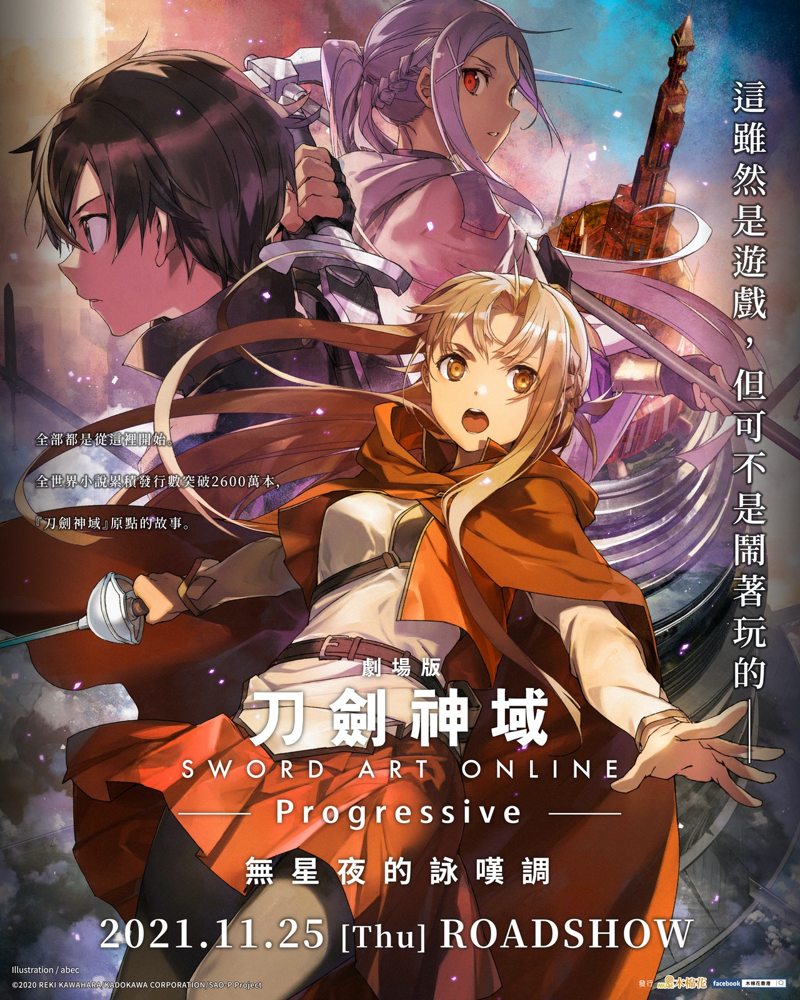
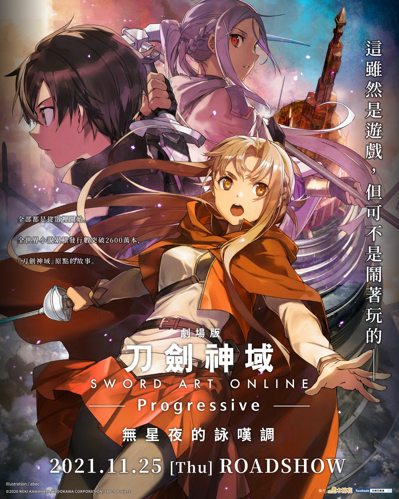

Anime Fans Club
x Home Anime -Doraemon -Sword Art Online -Fullmetal Alchemist Father -Attack On Iitan -Hunter X Hunter Shopping History Contact 

1960s
In the 1960s, the unique style of Japanese anime began forming, with large eyed, big mouthed, and large headed characters.[24] The first anime film to be broadcast was Moving pictures in 1960. 1961 saw the premiere of Japan's first animated television series, Instant History, although it did not consist entirely of animation.[32]: 90 Astro Boy, created by Osamu Tezuka, premiered on Fuji TV on January 1, 1963.[15][34] It became the first anime shown widely to Western audiences, especially to those in the United States,[35][36]: 31 becoming relatively popular[13] and influencing U.S. popular culture, with American companies acquiring various titles from Japanese producers.[37]: 95 Astro Boy was highly influential to other anime in the 1960s,[38] and was followed by a large number of anime about robots or space. While Tezuka released many other animated shows, like Jungle Emperor Leo,[9] anime took off, studios saw it as a commercial success, even though no new programs from Japan were shown on major U.S. broadcast media from the later 1960s to late 1970s.[36]: 33 The 1960s also brought anime to television and in America.1963 introduced Sennin Buraku as the first "late night" anime[38] and Toei Doga's first anime television series Wolf Boy Ken. Mushi Pro continued to produce more anime television and met success with titles such as Kimba the White Lion in 1965. What is noted as the first magical girl anime, Sally the Witch, began broadcasting in 1966. The original Speed Racer anime television began in 1967 and was brought to the West with great success. At the same time, an anime adaptation of Tezuka's Princess Knight aired, making it one of very few shoujo anime of the decade. The first anime adaptation of Shotaro Ishinomori's manga Cyborg 009 was created in 1968, following the film adaptation two years prior. 1969's "Attack no.1", the first shoujo sports anime was one of the first to have success in Japanese primetime and was also popular throughout Europe, particularly in Germany under the name "Mila Superstar."
The long-running Sazae-san anime also began in 1969 and continues today with excess of 6,500 episodes broadcast as of 2014. With an audience share of 25% the series is still the most-popular anime broadcast.[31]: 725
1970s
During the 1970s, the Japanese film market shrank due to competition from television.[39] This reduced Toei animation's staff and many animators went to studios such as A Pro and Telecom animation. Mushi Production went bankrupt (though the studio was revived 4 years later), its former employees founding studios such as Madhouse and Sunrise. Many young animators were thrust into the position of director, and the injection of young talent allowed for a wide variety of experimentation. One of the earliest successful television productions in the early 1970s was Tomorrow's Joe (1970), a boxing anime which has become iconic in Japan. 1971 saw the first installment of the Lupin III anime. Contrary to the franchise's current popularity, the first series ran for 23 episodes before being cancelled. The second series (starting in 1977) saw considerably more success, spanning 155 episodes over three years.Another example of this experimentation is Isao Takahata's 1974 television series Heidi, Girl of the Alps. This show was originally a hard sell because it was a simple realistic drama aimed at children, and most TV networks thought children needed something more fantastic to draw them in. Heidi was an international success, popular in many European countries, and so successful in Japan that it allowed for Hayao Miyazaki and Takahata to start a series of literary-based anime (World Masterpiece Theater). Miyazaki and Takahata left Nippon Animation in the late 1970s. Two of Miyazaki's critically acclaimed productions during the 1970s were Future Boy Conan (1978) and Lupin III: The Castle of Cagliostro (1979).
During this period, Japanese animation reached continental Europe with productions aimed at European and Japanese children, with the most-pronounced examples being the aforementioned Heidi but also Barbapapa and Vicky the Viking. Italy, Spain and France grew an interest in Japan's output, which was offered for a low price.[40][41] In the 1970s, censored Japanese animation were shown on U.S. television. One example of this censorship was transgender characters in Gatchaman ("Battle of the Planets").[42]
Another genre known as mecha came into being at this time. Some early works include Mazinger Z (1972–1974), Science Ninja Team Gatchaman (1972–1974), Space Battleship Yamato (1974–75) and Mobile Suit Gundam (1979–80). As a contrast to the action-oriented shows, shows for a female audience such as Candy Candy and The Rose of Versailles earned high popularity on Japanese television and later in other parts of the world.[40] By 1978, over fifty shows were aired on television.[43]
1980s
In the 1980s, anime started to go through a "visual quality renewal" thanks to new directors like Hayao Miyazaki, who founded Studio Ghibli in 1985, Isao Takahata and Katsuhiro Ōtomo.[9] Anime began to deal with more nuanced and complex stories, while Boy's Love continued to impact cultural norms, taking root across East Asia, as countries such as South Korea, Thailand, and China ingested these Japanese pop culture exports.[44][45]: 3 The shift towards space operas became more pronounced with the commercial success of Star Wars (1977). This allowed for the space opera Space Battleship Yamato (1974) to be revived as a theatrical film. Mobile Suit Gundam (1979) was also successful and revived as a theatrical film in 1982. The success of the theatrical versions of Yamato and Gundam is seen as the beginning of the anime boom of the 1980s, and of "Japanese Cinema's Second Golden Age".[46]A subculture in Japan, whose members later called themselves otaku, began to develop around animation magazines such as Animage and Newtype. These magazines formed in response to the overwhelming fandom that developed around shows such as Yamato and Gundam in the late 1970s and early 1980s.
In the United States, the popularity of Star Wars had a similar, though much smaller, effect on the development of anime.[citation needed] Gatchaman was reworked and edited into Battle of the Planets in 1978 and again as G-Force in 1986. Space Battleship Yamato was reworked and edited into Star Blazers in 1979. The Macross series began with The Super Dimension Fortress Macross (1982), which was adapted into English as the first arc of Robotech (1985), which was created from three separate anime titles: The Super Dimension Fortress Macross, Super Dimension Cavalry Southern Cross and Genesis Climber Mospeada. The sequel to Mobile Suit Gundam, Mobile Suit Zeta Gundam (1985), became the most successful real robot space opera in Japan, where it managed an average television rating of 6.6% and a peak of 11.7%.[47]
The otaku subculture became more pronounced with Mamoru Oshii's adaptation of Rumiko Takahashi's popular manga Urusei Yatsura (1981). Yatsura made Takahashi a household name and Oshii would break away from fan culture and take a more auteuristic approach with his 1984 film Urusei Yatsura 2: Beautiful Dreamer. This break with the otaku subculture would allow Oshii to experiment further.
One of the most-influential anime of all time, Nausicaä of the Valley of the Wind (1984), was made during this period. The film gave extra prestige to anime allowing for many experimental and ambitious projects to be funded shortly after its release. It also allowed director Hayao Miyazaki and his longtime colleague Isao Takahata to create their own studio under the supervision of former Animage editor Toshio Suzuki. This studio would become known as Studio Ghibli and its first film was Laputa: Castle in the Sky (1986), one of Miyazaki's most-ambitious films.
The success of Dragon Ball (1986) introduced the martial arts genre and became incredibly influential in the Japanese Animation industry. It influenced many more martial arts anime and manga series' including Hajime no Ippo (1989), Baki the Grappler (1991), Naruto (2002), and The God of Highschool (2020).
The 1980s brought anime to the home video market in the form of original video animation (OVA), as shows were shifting from a focus on superheroes to robots and space operas,[24] with original video animation (OVA or OAV) coming onto the market in 1984, with a range in length.[13] Home videos opened up the floodgates, introducing viewers, especially those in the West, to anime films.[35] Although anime was widely distributed through international piracy in the 1980s and 1990s,[37] before the days of online piracy, it continued to survive. Anime recovered in the U.S., becoming more of Japan's television exports as the country became the "world's leading authority" in entertainment.[26]: 19–20 The first OVA was Mamoru Oshii's Dallos (1983–1984). Shows such as Patlabor had their beginnings in this market and it proved to be a way to test less-marketable animation against audiences. The OVA allowed for the release of pornographic anime such as Cream Lemon (1984); the first hentai OVA was actually the little-known Wonder Kids studio's Lolita Anime, also released in 1984.
The 1980s also saw the amalgamation of anime with video games. The airing of Red Photon Zillion (1987) and subsequent release of its companion game, is considered to have been a marketing ploy by Sega to promote sales of their newly released Master System in Japan. Sports anime, as it is now known, made its debut in 1983 with an anime adaptation of Yoichi Takahashi's soccer manga Captain Tsubasa, which became the first worldwide successful sports anime. Its themes and stories were a formula that would be used in many sports series that followed, such as Slam Dunk, Prince of Tennis and Eyeshield 21. The late 1980s saw an increasing number of high-budget and experimental films. In 1985, Toshio Suzuki helped put together funding for Oshii's experimental film Angel's Egg (1985). Theatrical releases became more ambitious, each film trying to outclass or outspend its predecessors, taking cues from Nausicaä's popular and critical success. Night on the Galactic Railroad (1985), Tale of Genji (1986), and Grave of the Fireflies (1988) were all ambitious films based on important literary works in Japan. Films such as Char's Counterattack (1988) and Arion (1986) were lavishly budgeted spectacles. This period of lavish budgeting and experimentation would reach its zenith with two of the most-expensive anime film productions ever: Royal Space Force: The Wings of Honneamise (1987) and Akira (1988). Studio Ghibli's Kiki's Delivery Service (1989) was the top-grossing film for 1989, earning over $40 million at the box office.
Despite the commercial failure of Akira in Japan, it brought with it a much larger international fan base for anime. When shown overseas, the film became a cult hit and, eventually, a symbol of the medium for the West. The domestic failure and international success of Akira, combined with the bursting of the bubble economy and Osamu Tezuka's death in 1989, marked the end of the 1980s era of anime.
1990s
In 1995, Hideaki Anno wrote and directed the controversial anime Neon Genesis Evangelion. This show became popular in Japan among anime fans and became known to the general public through mainstream media attention. It is believed that Anno originally wanted the show to be the ultimate otaku anime, designed to revive the declining anime industry, but midway through production he also made it into a heavy critique of the subculture. It culminated in the successful but controversial film The End of Evangelion which grossed over $10 million in 1997. The many violent and sexual scenes in Evangelion caused TV Tokyo to increase censorship of anime content. As a result, when Cowboy Bebop was first broadcast in 1998, it was shown heavily edited and only half the episodes were aired; it too gained heavy popularity both in and outside of Japan.Evangelion started a series of so-called "post-Evangelion" or "organic" mecha shows. Most of these were giant robot shows with some kind of religious or complex plot. These include RahXephon, Brain Powerd, and Gasaraki. It also led to late-night experimental anime shows. Starting with Serial Experiments Lain (1998), late night became a forum for experimental anime such as Boogiepop Phantom (2000), Texhnolyze (2003) and Paranoia Agent (2004). Experimental anime films were also released in the 1990s, most notably the cyberpunk thriller Ghost in the Shell (1995),[48] which had a strong influence on The Matrix.[49][50][51] Ghost in the Shell, alongside Evangelion and the neo-noir space Western Cowboy Bebop, helped further increase the awareness of anime in international markets.[52]
The late 1990s also saw a brief revival of the super robot genre that had decreased in popularity due to the rise of real robot and psychological mecha shows like Gundam, Macross, and Evangelion. The revival of the super robot genre began with Brave Exkaiser in 1990, and led to remakes and sequels of 1970s super robot shows like Getter Robo Go and Tetsujin-28 go FX. There were very few popular super robot shows produced after this, until Tengen Toppa Gurren Lagann in 2007.
Alongside its super robot counterpart, the real robot genre was also declining during the 1990s. Though several Gundam shows were produced during this decade, very few of them were successful. The only Gundam shows in the 1990s which managed an average television rating over 4% in Japan were Mobile Fighter G Gundam (1994) and New Mobile Report Gundam Wing (1995). It wasn't until Mobile Suit Gundam SEED in 2002 that the real robot genre regained its popularity.[47]
In 1997, Hayao Miyazaki's Princess Mononoke became the most-expensive anime film up until that time, costing $20 million to produce. Miyazaki personally checked each of the 144,000 cels in the film,[53] and is estimated to have redrawn parts of 80,000 of them.[54] 1997 was also the year of Satoshi Kon's debut, Perfect Blue, which won "Best Film" and "Best Animation" awards at Montreal's 1997 Fantasia Festival, It also won awards in Portugal's Fantasporto Film Festival.
By 1998, over one hundred anime shows were aired on television in Japan,[43] including a popular series based on the Pokémon video game franchise. Other 1990s anime series which gained international success were Dragon Ball Z, Sailor Moon, and Digimon; the success of these shows brought international recognition to the martial arts superhero genre, the magical girl genre, and the action-adventure genre, respectively. In particular, Dragon Ball Z and Sailor Moon were dubbed into more than a dozen languages worldwide. Another large success was the anime One Piece, based on the best-selling manga of all time, which is still ongoing.
2000s
The "Evangelion-era" trend continued into the 2000s with Evangelion-inspired mecha anime such as RahXephon (2002) and Zegapain (2006) – RahXephon was also intended to help revive 1970s-style mecha designs. The number of anime productions began to decline after peaking in 2006 due to alternative forms of entertainment, less ad revenue, and other reasons, with TV Tokyo remaining one of the only channels airing anime shows.[15] Even so, anime began entering U.S. homes like never before, with fans able to get their hands on Japanese-language originals of anime they watched, thanks to the internet.[55]The real robot genre (including the Gundam and Macross franchises), which had declined during the 1990s, was revived in the early 2000s with the success of shows such as FLCL (2000), Mobile Suit Gundam SEED (2002), Eureka Seven (2005), Code Geass: Lelouch of the Rebellion (2006), Mobile Suit Gundam 00 (2007), and Macross Frontier (2008).[56]
The 1970s-style super robot genre revival began with GaoGaiGar in 1997 and continued into the 2000s, with several remakes of classic series such as Getter Robo and Dancougar, as well as original titles created in the super robot mold like Godannar and Gurren Lagann. Gurren Lagann in particular combined the super robot genre with elements from 1980s real robot shows, as well as 1990s "post-Evangelion" shows. Gurren Lagann received both the "best television production" and "best character design" awards from the Tokyo International Anime Fair in 2008.[57] This eventually culminated in the release of Shin Mazinger in 2009, a full-length revival of the first super robot series, Mazinger Z.
An art movement started by Takashi Murakami that combined Japanese pop-culture with postmodern art called Superflat began around this time. Murakami asserts that the movement is an analysis of post-war Japanese culture through the eyes of the otaku subculture. His desire is also to get rid of the categories of 'high' and 'low' art making a flat continuum, hence the term 'superflat'. His art exhibitions have gained popularity overseas and have influenced a handful of anime creators, particularly those from Studio 4 °C.[58]
The experimental late night anime trend popularized by Serial Experiments Lain also continued into the 2000s with experimental anime such as Boogiepop Phantom (2000), Texhnolyze (2003), Paranoia Agent (2004), Gantz (2004), and Ergo Proxy (2006) Before the massive boom from companies like Funimation and Adult Swim, view or even obtaining anime in the United States was quite difficult. since the market value and the interest in the states as quite low many broadcasting companies would not bother with airing the shows. This was due to a number of factors one of which was getting the show translated. In the modern we have anime that is dubbed over with English voices making it easier for western audiences. However in the early 90's when anime was first stating to become big that was not available. Many fans of the genre would translate the show them selves and would post them online for others to view.[59] This trend would continue until September 2, 2001. This is when the show Cowboy Bebop first aired on the broad casting network Adult Swim and was the first anime to be broadcast on live television.[60] The show as an instant successes the only problem being the air time was late and night meaning that the audience was subject to a small amount of people.[61]
In addition to these experimental trends, the 2000s were also characterized by an increase of moe-style art and bishōjo and bishōnen character design. There was a rising presence and popularity of genres such as romance, harem and slice of life. Anime based on eroge and visual novels increased in popularity in the 2000s, building on a trend started in the late 1990s by such works as Sentimental Journey (1998) and To Heart (1999). Examples of such works include Green Green (2003), SHUFFLE! (2006), Kanon (2002 and 2006), Fate/Stay Night (2006), Higurashi no Naku Koro ni (2006), Ef: A Tale of Memories (2007), True Tears (2008), and Clannad (2008 and 2009).
Many shows have been adapted from manga and light novels, including popular titles such as Yu-Gi-Oh! (2000), Inuyasha (2000), Naruto and its sequel series Naruto Shippuden (2002 and 2007), Fullmetal Alchemist and its manga faithful adaptation Fullmetal Alchemist: Brotherhood (2003 and 2009), Monster (2004), Bleach (2004), Rozen Maiden (2005), Aria the Animation (2005), Shakugan no Shana (2005), Pani Poni Dash! (2005), Death Note (2006), Mushishi (2006), Sola (2007), The Melancholy of Haruhi Suzumiya (2006), Lucky Star (2007), Toradora! (2008), K-On! (2009), Bakemonogatari (2009), and Fairy Tail (2009); these shows typically last several years and achieve large fanbases. Nevertheless, original anime titles continue to be produced with the same success. The 2000s marked a trend of emphasis of the otaku subculture. A notable critique of this otaku subculture is found in the 2006 anime Welcome to the N.H.K., which features a hikikomori (socially withdrawn) protagonist and explores the effects and consequences of various Japanese sub-cultures, such as otaku, lolicon, internet suicide, massively multiplayer online games and multi-level marketing.
In contrast to the above-mentioned phenomenon, there have been more productions of late-night anime for a non-otaku audience as well. The first concentrated effort came from Fuji TV's Noitamina block. The 30-minute late-Thursday timeframe was created to showcase productions for young women of college age, a demographic that watches very little anime. The first production Honey and Clover was a particular success, peaking at a 5% TV rating in Kantou, very strong for late-night anime. The block has been running uninterrupted since April 2005 and has yielded many successful productions unique in the modern anime market. There have been revivals of American cartoons such as Transformers which spawned four new series, Transformers: Car Robots in 2000, Transformers: Micron Legend in 2003, Transformers: Superlink in 2004, and Transformers: Galaxy Force in 2005. In addition, an anime adaptation of the G.I Joe series was produced titled G.I. Joe: Sigma 6. The revival of earlier anime series was seen in the forms of Fist of the North Star: The Legends of the True Savior (2006) and Dragon Ball Z Kai (2009). Later series also started receiving revivals in the late 2000s and early 2010s, such as with Studio Khara's Rebuild of Evangelion tetralogy (2007–2021), and new adaptations of Masamune Shirow's manga Appleseed XIII (2011) and Ghost in the Shell: Arise (2013–2016).
The decade also dawned a revival of high-budget feature-length anime films, such as Millennium Actress (2001), Metropolis (2001), Appleseed (2001), Paprika (2006), and the most expensive of all being Steamboy (2004) which cost $26 million to produce. Satoshi Kon established himself alongside Otomo and Oshii as one of the premier directors of anime film, before his premature death at the age of 46. Other younger film directors, such as Mamoru Hosoda, director of The Girl Who Leapt Through Time (2006) and Summer Wars (2009), also began to reach prominence. During this decade, anime feature films were nominated for and won major international film awards for the first time in the industry's history. In 2002, Spirited Away, a Studio Ghibli production directed by Hayao Miyazaki, won the Golden Bear at the Berlin International Film Festival and in 2003 at the 75th Academy Awards it won the Academy Award for Best Animated Feature. It was the first non-American film to win the award and is one of only two to do so. It has also become the highest grossing anime film, with a worldwide box office of US$274 million.
Following the launch of the Toonami programming block on Cartoon Network in the United States in March 1997, anime saw a giant rise in the North American market. Kid-friendly anime such as Pokémon, Yu-Gi-Oh!, Digimon, Doraemon, Bakugan, Beyblade, Sonic X, and the 4Kids Entertainment adaptation of One Piece have all received varying levels of success. This era also saw the rise of Anime-influenced animation, most notably Avatar: the Last Airbender and its sequel The Legend of Korra, Megas XLR, Code Lyoko, Ben 10, Chaotic, Samurai Jack, The Boondocks, RWBY and Teen Titans. As such, anime further became entrenched in U.S. households with the launch of Adult Swim by Cartoon Network in 2001, aimed at those in the "older OVA & tape trading crowd," with a new fandom forming.[62] This fandom was, however, exclusive and elitist with newcomers expected to know how to use IRC, some basic Japanese, and so on. At the 2004 Cannes Film Festival, Ghost in the Shell 2: Innocence, directed by Mamoru Oshii, was in competition for the Palme d'Or and in 2006, at the 78th Academy Awards, Howl's Moving Castle, another Studio Ghibli-produced film directed by Hayao Miyazaki, was nominated for Best Animated Feature. 5 Centimeters Per Second, directed by Makoto Shinkai, won the inaugural Asia Pacific Screen Award for Best Animated Feature Film in 2007, and so far, anime films have been nominated for the award every year. By 2004, over two hundred shows were aired on television.[43] In 2006, graduates of the University of California, Berkeley launched Crunchyroll in 2006,[63] becoming the first "anime streaming service," a model later used by Netflix, Funimation, and Amazon.com in the later 2010s.
2010s
In May 2012, the Toonami programming block in the United States was relaunched as a late night adult-oriented action block on Adult Swim, bringing more uncut popular anime back to a wider audience on cable television. In addition to broadcasting or re-broadcasting previously released dubbed anime, the block (as well as Adult Swim itself) has overseen the worldwide premiere of English dubbed releases for various anime, including but not limited to: Durarara!! (2010), Deadman Wonderland (2011), Hunter x Hunter (2011), Sword Art Online (2012), JoJo's Bizarre Adventure (2012), Attack on Titan (2013), Kill la Kill (2013), Space Dandy (2014), Akame ga Kill! (2014), Parasyte -the maxim- (2014), One-Punch Man (2015), Dragon Ball Super (2015), Boruto: Naruto Next Generations (2017), and Demon Slayer: Kimetsu no Yaiba (2019).[64]On September 6, 2013 Hayao Miyazaki announced that The Wind Rises (2013) would be his last film, and on August 3, 2014 it was announced that Studio Ghibli was "temporarily halting production" following the release of When Marnie Was There (2014), further substantiating the finality of Miyazaki's retirement. The disappointing sales of Isao Takahata's comeback film The Tale of Princess Kaguya (2013) has also been cited as a factor.[65] Several prominent staffers, including producer Yoshiaki Nishimura and director Hiromasa Yonebayashi, left to form their own Studio Ponoc, premièring with Mary and the Witch's Flower (2017).[66][67][68] Both Ghibli and Miyazaki subsequently went back into production for the up-coming film How Do You Live?,[69] while Takahata died on April 5, 2018 of lung cancer.[70]
Various international anime distribution companies, such as ADV Films, Bandai Entertainment, and Geneon Entertainment, were shut down due to poor revenue, with their assets spun into new companies like Sentai Filmworks or given to other companies.[71] In 2011, Puella Magi Madoka Magica was aired in Japan. The anime was a change from normal magical girl anime, as this anime contained more darker, complex and more gorier themes than magical anime usually would. The anime got great reception from critics, as United Kingdom's Anime Network's Andy Hanley rated it a 10 out of 10 for its emotional content and evocative soundtrack.
Both Attack on Titan and The Wind Rises reflect a national debate surrounding the reinterpretation of Article 9 of the Constitution of Japan, with Miyazaki's pacifism in the film coming under fire from the political right,[72] while Attack on Titan has been accused of promoting militarism by people in neighboring Asian countries, despite being intended to show the haunting, hopeless aspects of conflict.[73] The mecha anime genre (as well as Japanese kaiju films) received a Western homage with the 2013 film Pacific Rim directed by Guillermo del Toro.[74] Western streaming services such as Netflix and Amazon Prime are increasingly becoming involved in the production and licensing of anime for the international markets.[75][76] In 2015, an all-record-high of three hundred forty anime series aired on television.[43]
2020s
The international popularity and demand of anime highly rose up during the Covid-19 pandemic due to the medium's increased availability on streaming services.[77][78] Demon Slayer: Kimetsu no Yaiba the Movie: Mugen Train became the highest-grossing Japanese film and the world's highest-grossing films of 2020.[79] It also became the fastest grossing film in Japanese cinema, because in 10 days it made 10 billion yen ($95.3m; £72m).[79] It beat the previous record of Spirited Away which took 25 days.[79]In 2021 the anime adaptations of Jujutsu Kaisen, Demon Slayer: Kimetsu no Yaiba and Tokyo Revengers were among the top 10 most discussed TV shows worldwide on Twitter.[80][81]
In 2022 Attack on Titan won the award of "Most in-demand TV series in the world 2021" in the Global TV Demand Awards. Attack on Titan became the first ever non-English language series to earn the title of World’s Most In-Demand TV Show, previously held by only The Walking Dead and Game of Thrones.[82]